SOP Archivist 시스템 설명서
0읽는 법
이 문서는 사용 안내가 아니라 시스템을 이해하고 피드백하기 위한 설명서다. 옛 SOP 묶음 하나(합성 "QC Centrifuge")가 새 SOP·WI로 바뀌는 과정을 장마다 따라가고, 같은 문장들이 각 단계에서 어떻게 보이는지 계속 짚는다.
문장 앞의 S1 같은 표시는 3장에서 정한 "따라갈 문장"이다. 화면의 상태 라벨은 화면 언어와 상관없이 영어다(In progress, Confirmed 등).
1한 장으로 보기
옛 SOP 파일이 문장 단위로 쪼개지고, 새 SOP·WI의 자리로 옮겨져, 그 결과로 추적표가 계산되고, 검토로 간다. 한 앱 안에서 끝나고 단계 사이에 파일을 내려받아 다시 올리지 않는다.
- 코드가 셀 수 있는 것은 코드가 한다: 추출, 누락·중복 계산, 결과물. 사람이 세지 않는다.
- AI는 정해진 칸 중에서 고르는 제안만 한다: 근거와 규칙 ID를 붙이고, 확정하지 않는다.
- 사람은 판단하고 확정한다: "AI 제안" 상태인 줄만 보면 되게 만든다.
화면은 왼쪽 레일(또는 상단 탭)의 단계 순서와 같다: Overview · Documents · 1 Split · 2 To-Be · 3 Assign · 4 Outputs · Review. 배정의 두 입구(분류 = 아직 안 쓴 문서의 칸, 짝 맞추기 = 이미 쓴 New 문서의 문장)는 Assign 한 화면에서 Old 조각마다 정한다.
2용어와 데이터의 모양
결과물 A·B·C는 모두 아래 세 가지 기록에서 계산된다: 단위 판단(옛 문장이 어디로 가는가), 새 문장(새 문서 자리에 들어갈 글), 출처 연결(새 문장 ↔ 옛 단위). 나머지 용어는 이 셋을 만들기 위한 것이다.
| 용어 | 뜻 | 예시 묶음에서 |
|---|---|---|
| 묶음 (bundle) | 재구성 한 건. 옛 SOP 여러 개를 새 SOP·WI로 바꾸는 작업 하나. 상태·To-Be·멤버가 묶음에 붙는다. | "SYNTHETIC QC Centrifuge" |
| 옛 문서 / 새 문서 | 옛 문서는 재구성 대상 SOP. 새 문서는 To-Be 목록의 새 SOP·WI. 입구 2에서는 새 문서 파일도 올린다. | 옛: OLD-1–5 · 새: SOP-CF, WI-01–04 |
| 원문 블록 | 추출기가 원본에서 읽은 문단·표 칸·그림 하나. 원문 글자 그대로이고 절대 바뀌지 않는다. 본문·머리말·꼬리말·각주·텍스트 상자를 구별한다. | OLD-3의 머리말 "SYNTHETIC OLD-3 Beckman Coulter"도 블록이다 |
| 단위 (unit) | 블록 위의 글자 범위. 종류: 문장 / 제목 / 그림 / 표 / 표의 행 / 칸 문장. 표시 ID는 문서번호-순번. | OLD-1-051 "로터를 장착하고 뚜껑을 닫은 후" |
| 커버 단위 | 누락 계산의 원소: 문장(칸 문장 포함)·제목·그림. 표·행 단위는 칸 문장들의 보낸 곳을 담는 그릇이라 따로 세지 않는다. | OLD-1의 표는 칸 문장 6개를 센다 |
| 처분 | 단위가 어디로 가는가: 미배정 / 배정(새 문서 자리) / 삭제 / 다른 문서로 이동. | 반복 문장은 삭제, 교정 문장은 SOP-QC-99999로 이동 |
| 새 문장 | 새 문서 한 자리에 들어갈 문장(또는 표·그림). 출처 옛 단위 0개 이상과 이어진다. 확정 문장과 AI 제안 문장을 따로 보관한다. | "이 SOP는 QC 원심분리기를 …정한다." (SOP-CF Purpose) |
| 위치 (자리) | SOP는 칸 키(procedures.maintenance 등), WI는 (몇 번째 단계, Instruction 또는 Why), 입구 2 문서는 그 문서의 실제 절. | WI-01 · 3단계 · Instruction |
| 관계 묶음 | 나뉘거나(1→N) 합쳐진(N→1) 단위·새 문장끼리의 묶음. ID는 구성원에서 계산한다(G-OLD-1-028). | S3(나눔), S4(합침) |
| 짝 (pair) | 같은 내용의 한글 단위와 영어 단위를 잇는 것. 짝은 배정 화면에서 한 줄이고 한 곳으로 간다(갈리면 서버가 짝을 푼다). 커버리지는 줄(짝 하나 또는 짝 없는 Unit 하나)로 센다. | OLD-1-003 ↔ OLD-1-004 |
| 입구 1 / 입구 2 | 입구 1: To-Be를 아직 안 씀 → 옛 단위를 칸에 배정. 입구 2: 새 문서를 이미 씀 → 옛 단위를 새 문장의 출처로 잇는다. 새 문서마다 고른다. | SOP-CF·WI-01–03은 입구 1, WI-04는 입구 2 |
| 상태 | 커버 단위와 새 문장의 확인 상태. 정확히 하나: 미배정 / AI 제안 / 확정 / 보류. | Unassigned AI suggested Confirmed On hold |
| 변경 종류 | 그대로 / 말투 / 고쳐 씀 / 나눔 / 합침 / 번역 / 삭제 / 신규 / 표 구성 변경. 구조에서 나오는 종류(나눔·합침·번역·신규·삭제)는 코드가 계산하고, 글자 비교 종류(그대로·말투·고쳐 씀)는 사람이 정한다(AI가 제안). | S1 고쳐 씀, S2 말투, S3 나눔, S4 합침 |
- 한 추출 안에서 커버 단위들은 공백 아닌 모든 글자를 빠짐없이, 겹치지 않게 덮는다. 그래서 "빠진 글자 없음"을 코드가 증명한다.
- 원문은 바뀌지 않는다. 고친 글은 새 문장에 따로 저장한다.
- 사람의 저장 단위는 관계 묶음이다. 합침을 반만 확정하는 상태가 생기지 않는다.
- 여러 작성자가 동시에 고칠 수 있어서, 바뀌는 대상마다
revision을 두고 남이 먼저 바꿨으면 409로 막고 최신을 다시 읽게 한다.
3예시 묶음과 따라갈 문장
테스트 정답으로도 쓰는 합성 사례다(backend/scripts/synthetic_sop.py, 도메인 사례 §1). 옛 SOP 5개를 새 SOP 1개와 WI 4개로 다시 짠다. 모든 문장은 지어낸 것이다. 데모 시드는 같은 자료로 묶음 4개를 서로 다른 단계까지 몰아 둔다: 1 쪼개기 직후 · 2 분류 절반 · 3 검토 대기 · 4 AI 제안. 아래 화면들은 단계에 맞는 묶음에서 찍었다.
올리는 파일
| 문서 | 형식 · 언어 배치 | 이 문서로 보여 주는 것 |
|---|---|---|
| OLD-1 Eppendorf | DOCX · 한/영 연달아 | 고쳐 쓰기·말투·그대로, 복합 문장 나누기, 데이터 표, 캡션 그림, 같은 문장 반복(삭제), OLD-2와 합칠 문장 |
| OLD-2 Eppendorf 5702R | DOCX · 한/영 연달아 | 합침의 다른 쪽, 중복 배정(SOP와 WI 둘 다), 일부러 남기는 누락(검토 요청 거절 확인용) |
| OLD-3 Beckman Coulter | DOCX · 한/영 따로 | 한글 전체 뒤 영어 전체, 머리말·꼬리말, 이력 문장 삭제 |
| OLD-4 Thermoscientific | DOCX · 한/영 연달아 | 한/영 두 열 레이아웃 표, 텍스트 상자, 다른 문서로 이동 |
| OLD-5 Labogene | 텍스트 PDF · 영어만 | PDF 보조 추출, 입구 2의 옛 쪽 |
| WI-04 Labogene 운전 | DOCX · 영어만 · 새 문서 | 입구 2: 이미 써 둔 WI. 같은 글자 짝·고쳐 쓴 짝·나눈 짝·신규 문장 |
| SYNTHETIC_tobe.xlsx | Excel | To-Be 목록 가져오기: SOP-CF와 WI-01–03, WI 단계 |
새 문서 (To-Be)
| 번호 | 제목 | 종류 | 입구 | 칸 또는 단계 |
|---|---|---|---|---|
| SOP-CF | Use and Maintenance of QC Centrifuge | SOP (장비 SOP) | 1 | 7칸 + 하위 칸. Troubleshooting은 N/A(사유) |
| WI-01 | Operation of Eppendorf Centrifuge | WI (부모 SOP-CF) | 1 | 1 Pre-cool and check · 2 Load the tubes · 3 Mount the rotor and close the lid · 4 Start the run · 5 Unload and clean |
| WI-02 | Operation of Beckman Coulter Centrifuge | WI | 1 | 1 Load · 2 Start · 3 Clean the rotor |
| WI-03 | Operation of Thermoscientific Centrifuge | WI | 1 | 1 Power on · 2 Set and start the run |
| WI-04 | Labogene Centrifuge Operation | WI | 2 | 파일의 실제 절: 1. Preparation · 2. Operation · 3. After use |
따라갈 문장
장마다 이 문장들이 어떻게 보이는지 짚는다. 한/영 짝이 있는 문장은 한글 쪽만 적었다.
| 원문 (위치) | 보낸 곳 | 확정 문장 · 변경 종류 | |
|---|---|---|---|
| S1 | 이 절차는 Eppendorf 원심분리기를 안전하고 일관되게 사용하는 방법을 정한다. OLD-1 §1 | SOP-CF · Purpose | 이 SOP는 QC 원심분리기를 안전하고 일관되게 사용하고 유지 관리하기 위한 요구사항을 정한다. · 고쳐 씀 |
| S2 | QC 분석자는 사용 전에 원심분리기 상태를 점검한다. OLD-1 §4 | SOP-CF · Responsibilities | …점검하여야 한다. · 말투 (SOP 문체, 규칙 R02) |
| S3 | 로터를 장착하고 뚜껑을 닫은 후 START 버튼을 누른다. OLD-1 §5 / Mount the rotor, close the lid and press START. | WI-01 · 3단계와 4단계 Instruction | 한글: 쪼개기에서 단위를 둘로 나눈 뒤 각각 3·4단계로. 영어: 단위는 하나로 두고 새 문장 둘로 나눔(1:2) · 나눔 |
| S4 | 원심분리 후 로터가 완전히 멈춘 것을 확인한다. OLD-1 §5 + 회전이 멈춘 뒤 뚜껑을 연다. OLD-2 §1 | WI-01 · 5단계 Instruction | 로터가 완전히 멈춘 것을 확인한 후 뚜껑을 연다. · 합침 (출처 둘) |
| S5 | 보호 장갑과 보안경을 착용한다. OLD-1 §6 (§5와 같은 글자 반복) | 삭제 | 사유: 같은 문장이 5절에도 있어 한 번만 남긴다. |
| S6 | 불균형 경고가 울리면 즉시 운전을 멈추어야 한다. OLD-2 §1 | SOP-CF · Safety 와 WI-01 · 4단계 | 중복 배정(서로 다른 새 문서 둘) — 사유 필수 |
| S7 | 원심분리기 교정은 장비 교정 SOP에 따른다. OLD-4 §2 | 다른 문서로 이동 (SOP-QC-99999) | 사유: 교정 절차는 장비 교정 SOP가 관리한다. |
| S8 | 표 Rotor | Speed | Time / F-45-30-11 | 14,000 rpm | 10 min OLD-1 §5 | WI-01 · 4단계 (표 통째로) | 표 새 문장 하나 + 칸 문장 6개 · 그대로 |
| S9 | 그림 1. 로터 장착 위치 (캡션 포함) OLD-1 §5 | WI-01 · 3단계 | 그림은 언어 중립, 내용은 읽지 않음 · 그대로 |
| S10 | Select the program and press RUN to start the centrifuge. OLD-5 | WI-04 · 2. Operation (입구 2) | WI-04의 "Select the program." + "Press RUN to start the centrifuge."의 출처 · 나눔 |
| S11 | (WI-04에만 있음) Record the run in the equipment logbook. | WI-04 · 3. After use | 출처 없음 · 신규 |
| S12 | 1. 목적 / 1. Purpose 같은 구조 제목, OLD-3 머리말·꼬리말 | 삭제 (여러 개 한 번에) | 사유: 구조 제목·머리말은 새 문서 양식이 대신한다. |
4묶음 만들기와 개요
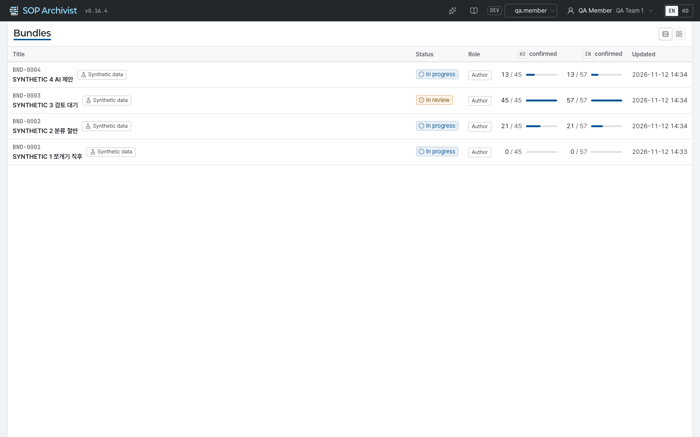
- 묶음 한 줄. 누르면 개요로 간다. 합성 묶음에는 Synthetic data 표시가 붙는다.
- 묶음 상태 칩. 진행 중은 연한 파랑, 검토 대기는 연한 호박, 완료는 꽉 찬 회색(13장).
- 확정 진행(확정 줄 / 전체 줄). 줄은 한/영 짝 하나 또는 짝 없는 Unit 하나다 — 언어별로 나눠 세지 않는다.
- 표·카드 보기 전환. 고른 보기는 목록마다 이 브라우저에 기억된다.
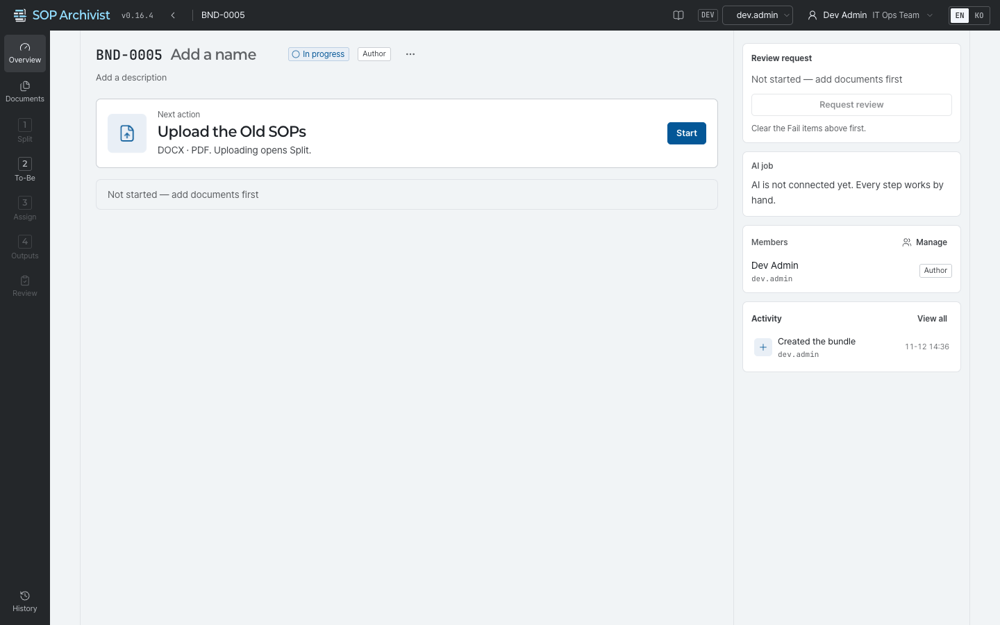
bundle.create 권한이 있어야 단추가 보인다. 이름을 묻지 않고 순차 코드로 만들고, 만든 사람이 작성자가 된다.
- Bundle 코드(
BND-0005). 이름은 옆 연필로 나중에 붙인다. …메뉴: 시험용 데이터 표시(실제 Bundle과 섞여 보이지 않게)와 삭제.- 다음 할 일: Old SOP 업로드.
- 문서가 없으면 Split부터 Review까지 잠긴다(To-Be는 Excel로 먼저 채울 수 있어 열려 있다).
- History: 이 Bundle의 작업 기록 전체.
- 묶음 내용은 멤버만 본다. 시스템 관리자도 멤버가 아니면 내용을 못 본다(대신
bundle.admin으로 자기를 멤버로 넣을 수 있고 기록이 남는다). - 멤버 역할은 둘: 작성자(모든 편집, 멤버 관리, 검토 요청과 요청 거두기, 다시 열기, 작업 중 묶음 삭제)와 검토자(읽기·내보내기, 검토 완료·되돌리기). 한 사람은 한 묶음에서 한 역할만 갖는다 — 작성자가 자기 묶음을 검토 완료하지 못하게.
- 작성자는 늘 한 명 이상이어야 하고(마지막 작성자는 못 뺀다), 검토 대기 중에는 누구도 자기 역할을 바꾸지 못한다.
- 퇴직자(HR에서 비활성)는 멤버여도 들어오지 못한다.
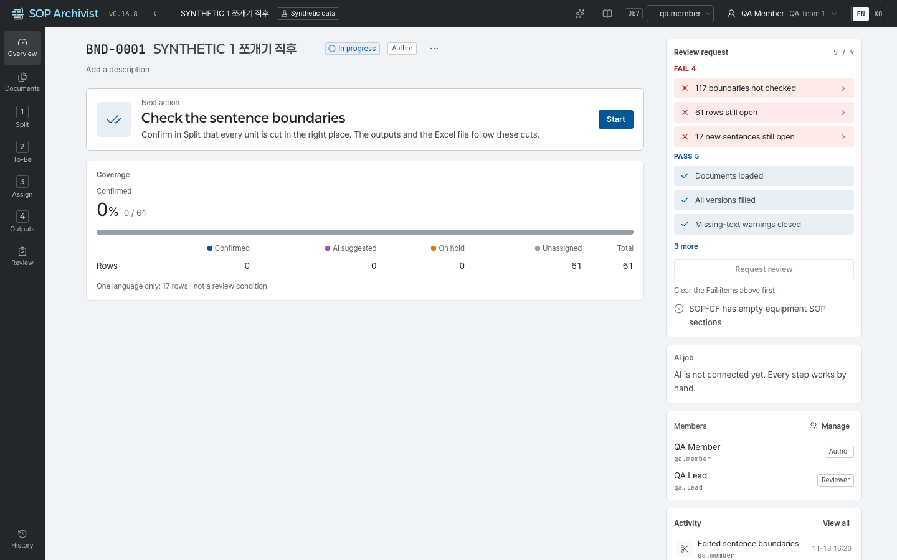
- 다음에 할 일. 지금 상태에서 가장 앞에 막힌 일을 하나 골라 그 화면으로 보낸다.
- 커버리지: 확정·AI 제안·보류·미배정 줄 수 한 벌(짝 하나가 한 줄, 그림·표도 한 줄). 아래 작은 글 "One language only"는 짝도 다른 언어 문장도 없는 줄 수이고 검토 요청 조건이 아니다.
- 검토 요청 조건. 하나라도 ✕면 검토 요청 단추가 잠긴다(12장).
- 멤버와 관리(검토자 추가).
- 작업 기록: 누가·언제·무엇을. 글자 내용은 싣지 않고 ID로 가리킨다.
5문서 올리기와 추출
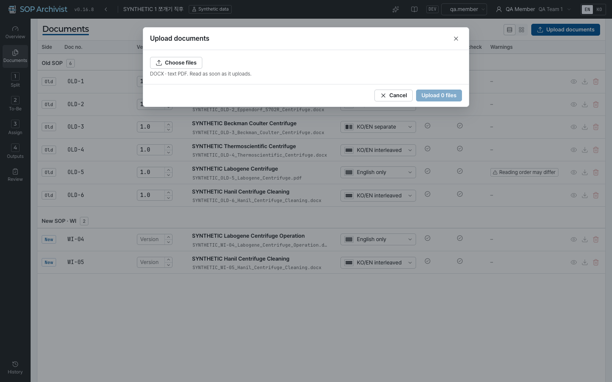
- 옛 문서: 재구성 대상 SOP.
- 새 문서: 입구 2용으로 이미 써 둔 SOP·WI. 고르면 종류(SOP/WI)와 부모 SOP를 함께 정하고, 올라가면 To-Be 목록에 그 문서 줄이 생긴다.
- 파일 고르기(여러 개). 업로드 요청이 추출이 끝날 때까지 기다렸다가 결과를 돌려준다(보통 몇 초).
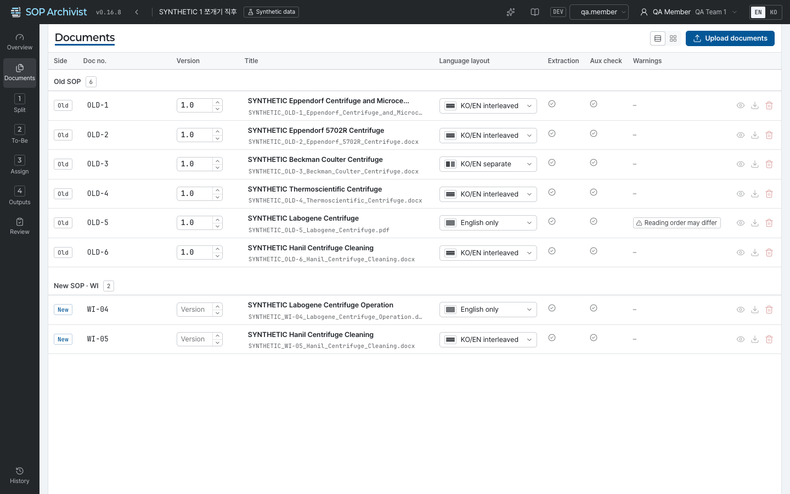
- 문서 올리기.
- 언어 배치: 한/영 연달아 · 한/영 따로 · 영어만 · 한글만. 이 값이 짝 제안 방식을 정한다.
- 추출 상태: Ready(연한 회색) / Rejected·Failed(꽉 찬 빨강). 거절·실패 문서가 남아 있으면 검토 요청이 안 된다.
- 보조 검사(MarkItDown 대조) 결과.
- 추출 경고. OLD-5는 PDF라 "다단·표·읽기 순서가 실제와 다를 수 있다" 경고가 붙었다.
- 표·카드 전환.
- 메인 추출기(자체 구현)가 DOCX XML을 직접 읽는다. 머리말·꼬리말·각주·미주·텍스트 상자를 본문과 구별하고, 필드 코드는 버리고 결과만, 병합 셀은 중복 없이 읽는다. 그림은 캡션과 묶는다. 위치는 XML 경로와 쪽 번호(근거: Word가 저장한 쪽 나눔 / 수동 / 추정)로 남긴다.
- 보조 추출기(MarkItDown)로 같은 파일을 한 번 더 바꿔, 그 글자가 메인 결과에 다 있는지 코드로 대조한다. 없으면 "추출 누락 의심" 경고를 띄운다(문서당 200개까지). 사람이 하나씩 "확인함"으로 닫아야 검토 요청이 된다. 메인 결과를 자동으로 고치지는 않는다.
- 파싱은 따로 띄운 자식 프로세스에서 시간·메모리 한도를 걸고 돈다(동시에 2개까지). 이상한 파일이 서버를 멈추지 못하게 하려는 것이다.
- 텍스트 PDF는 보조로만 받는다: 빈 줄로 문단을 나누고 표 구조는 만들지 않는다.
- 암호·DRM 파일, 스캔 이미지 PDF, 암호화 PDF
- 변경 추적이 남은 DOCX: "변경 내용을 모두 수락하거나 거부한 뒤 다시 올려 주세요"
- 다른 문서를 끼워 넣은 DOCX(altChunk), 같은 묶음에 같은 파일(해시)
- 한도 초과: 파일 25 MiB, 압축 해제 200 MiB, PDF 500쪽, 문서 200만 자, 파싱 60초
6쪼개기
코드가 문단·조항 번호·표 구조·문장 끝 규칙으로 먼저 자른다. 한글(~다. ~음.)·영어 문장 끝을 보되 소수점, 약어(e.g. No. Fig.), Rev. 2, 문서 번호, 목록 번호는 자르지 않는다. 사람은 원문 용지를 보며 경계를 확인하고 필요하면 고친다.
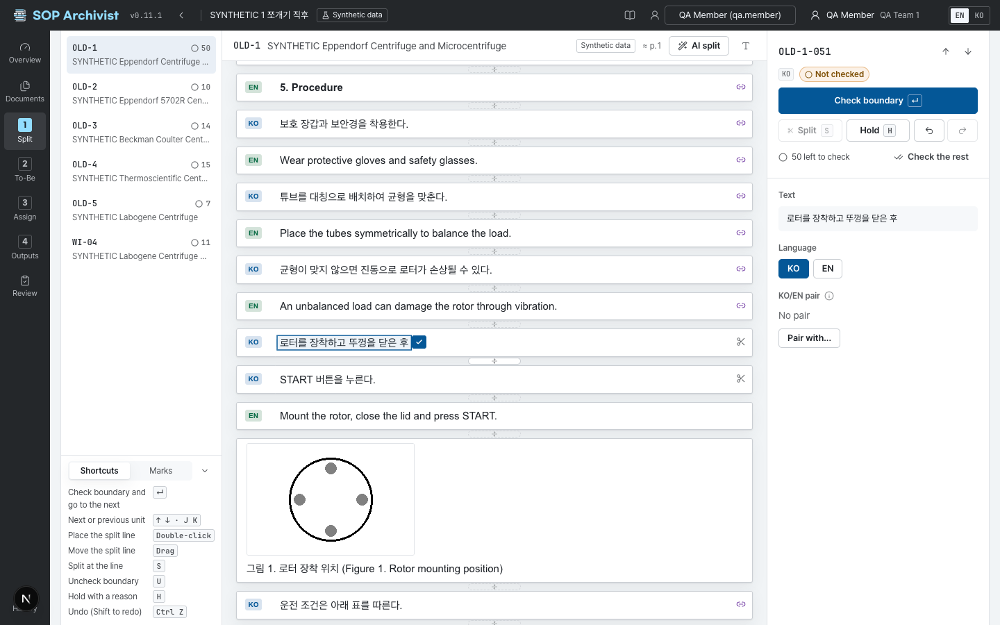
- 문서 목록. Old·New 문서 모두 쪼갠다. 아래 도움말은 단축키와 용지 표시의 뜻이다.
- 원문 용지 위 고른 Unit(글자 영역의 바깥 윤곽). "로터를 장착하고 뚜껑을 닫은 후"와 "START 버튼을 누른다."가 이제 서로 다른 Unit이다.
- 고른 Unit 조각 아래로 펼쳐지는 확인 단추. 누르면(또는 ↵) 경계를 확인하고 다음 Unit으로 간다.
- Unit ID(
OLD-1-051)·경계 확인 상태(확인 전 노란 칩, 확인함 파란 칩). 언어는 화면에 표시하지 않는다 — 글자로 코드가 판정하고, 틀리면 용지의 그 자리 메뉴(오른쪽 단추)에서 바꾼다. - 경계 맞음 → 다음 Unit(↵). 판단을 확정하면 경계도 확인된 것으로 친다.
- 나누기(S): 용지에서 자를 자리를 두 번 누르면 선이 놓이고 잠시 뒤 "여기서 나누기" 팝업이 뜬다. 선은 그 Unit 안에서 끌어 옮긴다.
- 묶인 상대(Joined with). 나눈 한글 반쪽은 영어 쪽과 1:1이 아니어서 "Not joined"다 — 이 경우 영어 Unit은 배정에서 New 문장 둘로 나눈다. Join with…로 떨어진 조각을 골라 묶는다(언어가 같으면 한 문장으로 합치고 한/영이 섞이면 짝, 합친 결과에는 One sentence | KO/EN pair 전환).
- 도움말(단축키 | 표시 탭, 접을 수 있다): 조각 앞 절 번호 칸과 보류 칩, 끝 아이콘(확인·짝·분류 확정·AI 제안·나눔/합침), 한/영 짝은 붙은 카드. Unit마다 처음부터 종이 한 조각이고 확인하면 확인 표시만 붙는다. 붙어 있는 글 조각 사이에는 늘 Join 단추가 있다(묶을 수 없으면 흐리고 까닭이 뜬다).
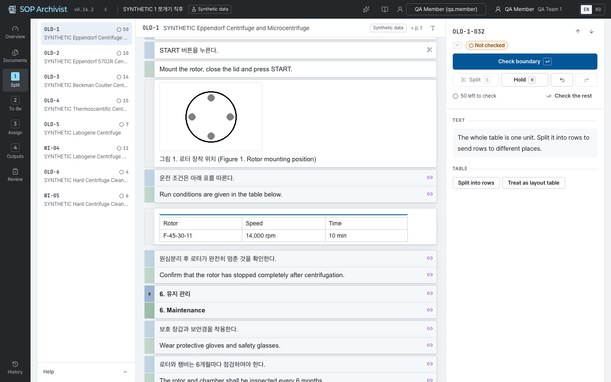
- 표 손잡이.
- 표 단위 ID.
- 표 편집: 행 단위로 나누기(행마다 다른 곳으로 보낼 때), 레이아웃 표로 바꾸기.
- 데이터 표(기본): 표 하나가 한 단위이고, 칸 글자도 칸 문장으로 추적한다. 칸 문장은 표(또는 행)의 보낸 곳과 상태를 따른다.
- 레이아웃 표: 본문을 배치하려고 쓴 표(예: OLD-4의 한/영 두 열). 칸 글을 보통 문단처럼 다뤄 칸 문장마다 따로 배정한다. 작성자가 표마다 바꾼다 — 코드가 판별해 제안하지는 않는다(드물어서).
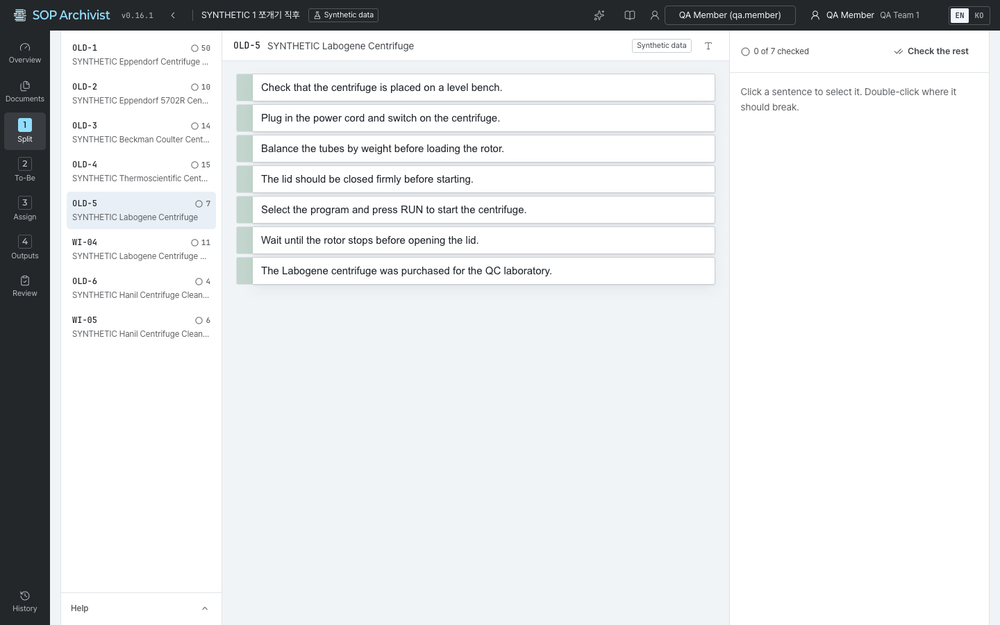
- OLD-5.
- 용지. S10 "Select the program and press RUN …"이 한 단위로 있다 — 입구 2에서 새 문장 둘의 출처가 된다.
- 편집 종류: 나누기, 합치기(화면은 위아래로 붙은 둘만), 경계 옮기기, 골라 만들기, 표 행 나누기·합치기, 레이아웃 표, 언어 바꾸기, 경계 확인.
- 단위는 제자리에서 바뀌지 않는다. 편집하면 옛 단위가 은퇴하고 새 단위가 미배정으로 생긴다. 결과물 A의 단위 ID가 흔들리지 않는 이유다.
- 이미 판단이 있는 단위를 은퇴시키면 확인을 받는다. 그 판단은 이력으로 가고, 같은 관계 묶음의 나머지는 지우지 않고 시스템 보류("관련 단위가 바뀜")로 돌린다. 다른 작성자가 확정한 것을 조용히 날리지 않으려는 것이다.
- 되돌리기·다시 하기는 서버에 문서마다 기록한다(여러 작성자가 같은 기록을 본다). 되돌리면 은퇴한 단위가 원래 ID로 살아나지만 판단은 자동 복원하지 않는다.
- 편집이 끝날 때마다 "글자를 빠짐없이 덮는가"를 다시 검사한다.
unit.check_all). 쪼개거나 합쳐 생긴 Unit은 확인 전으로 시작한다.7To-Be 목록
분류를 시작하기 전에 새 문서 목록을 넣는다. 분류가 "새로 판단하기"에서 "정해진 칸 중에서 고르기"로 바뀌어 사람도 AI도 틀릴 여지가 준다.
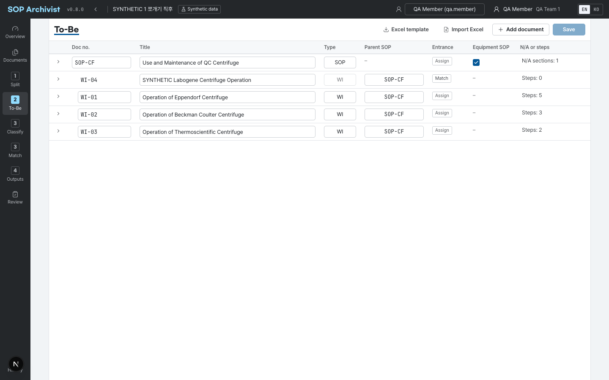
- Excel 템플릿 내려받기(시트 "새 문서", "WI 단계").
- Excel 가져오기. 값만 읽고 수식은 무시한다. 번호 중복·부모 없는 WI·SOP 아닌 부모는 거절.
- 새 문서 줄 더하기.
- 줄 펼치기: SOP는 칸과 N/A, WI는 단계.
- 저장. 묶음
revision으로 동시 편집을 막는다.
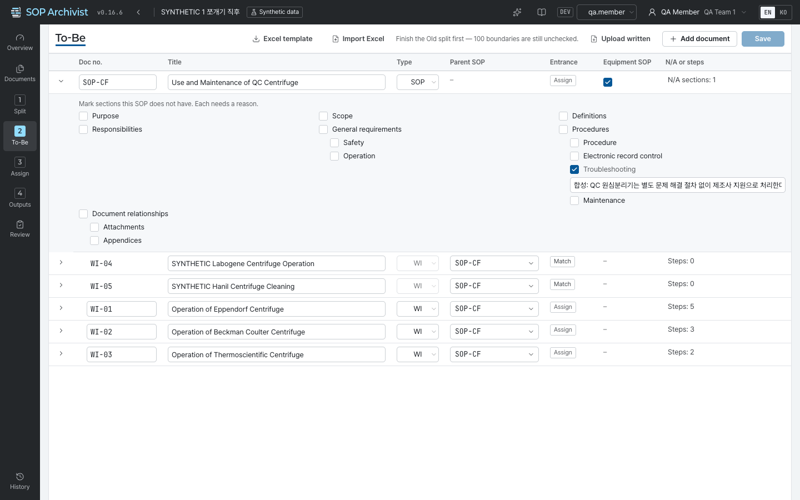
- SOP의 고정 7칸(Purpose / Scope / Definitions / Responsibilities / General Requirements / Procedures / Document Relationships)과 하위 칸. 사용자 정의 칸은 없다.
- N/A 표시. 사유가 필수이고 AI는 N/A를 정하지 않는다. 상위 칸이 N/A면 그 아래에도 배정할 수 없다.
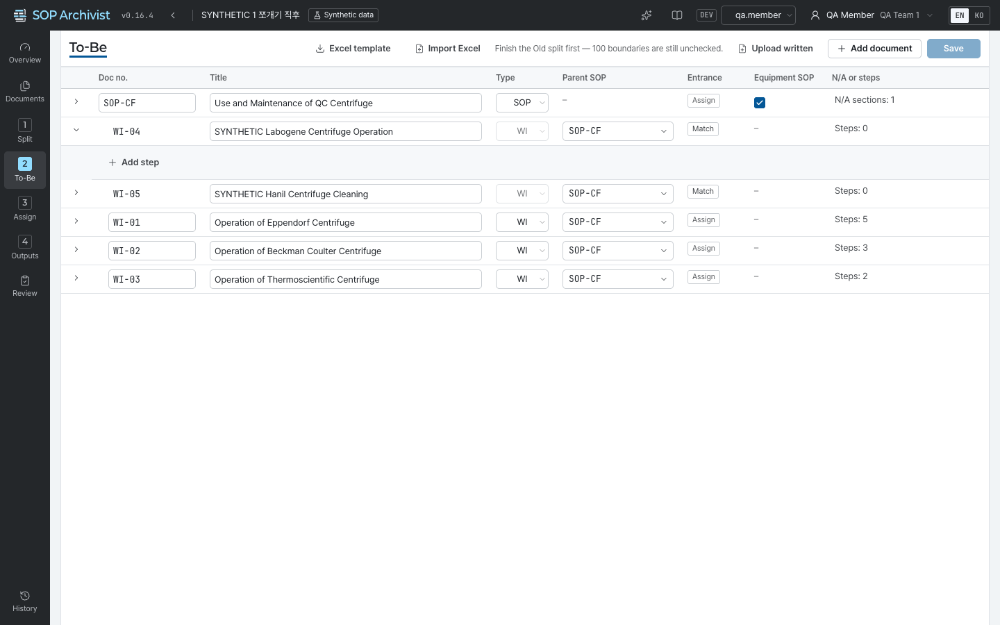
- 단계 번호와 제목. 미리 적어 두면 그 단계에 배정하고, 안 적었으면 WI에 배정한 뒤 결과물 C에서 순서를 정한다.
- 단계 더하기. 단계 번호는 다시 매기지 않는다(서버가 번호로 단계를 알아본다).
- R01: SOP는 준수할 정책·요구사항·역할, WI는 수행할 방법·순서. 문체는 보조 신호이고 의미로 판단한다.
- R02: SOP 문체
~하여야 한다~되어야 한다, WI 문체~한다~을 확인한다. - R10: Why는 실수 가능성·눈에 안 띄는 중요성·필수 순서·주의 근거가 있을 때만 둔다.
- 장비 SOP인데 Procedures 아래 하위 칸이 비어 있고 N/A도 아니면 경고한다(완료를 막지는 않는다 — 그림 4-3의 ⓘ 줄).
8Assign — 보낼 곳 정하기
Old 조각을 한 줄씩(한/영 짝은 함께) 골라 보낼 곳을 정한다. 보낼 곳은 아직 안 쓴 To-Be 문서의 칸(분류, 입구 1)이거나 이미 쓴 New 문서의 문장(짝 맞추기, 입구 2, 9장), 또는 삭제·다른 문서로 이동이다. 어느 쪽인지는 To-Be에서 문서마다 정한 입구가 정하고, 사람은 고르기만 한다.
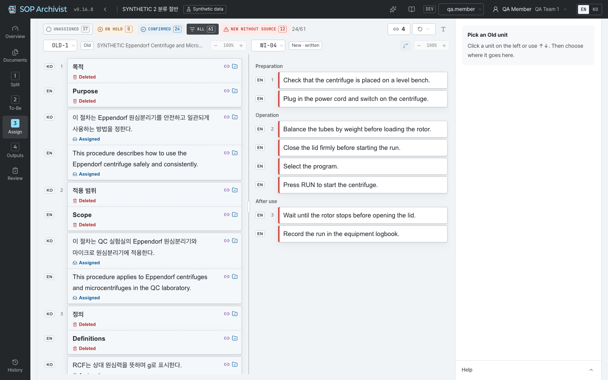
- 상태 거르기: 미배정·AI 제안·보류·확정·전체(개수)와 출처 없는 New. ↑↓·J/K는 고른 상태의 조각만 밟는다. 처음 열면 전체(All)이고 접지 않는다.
- Old 원문이 곧 목록이다. Split과 같은 Unit 조각이고, 끝에 상태 표시, 확정한 조각 아래에 간 곳이 붙는다.
- 고른 조각이 없으면 오른쪽 칸이 안내를 보인다.
- 범례(조각 표시·New 원문 표시·키). 조각을 고르면 오른쪽 위 (i)로 숨는다.
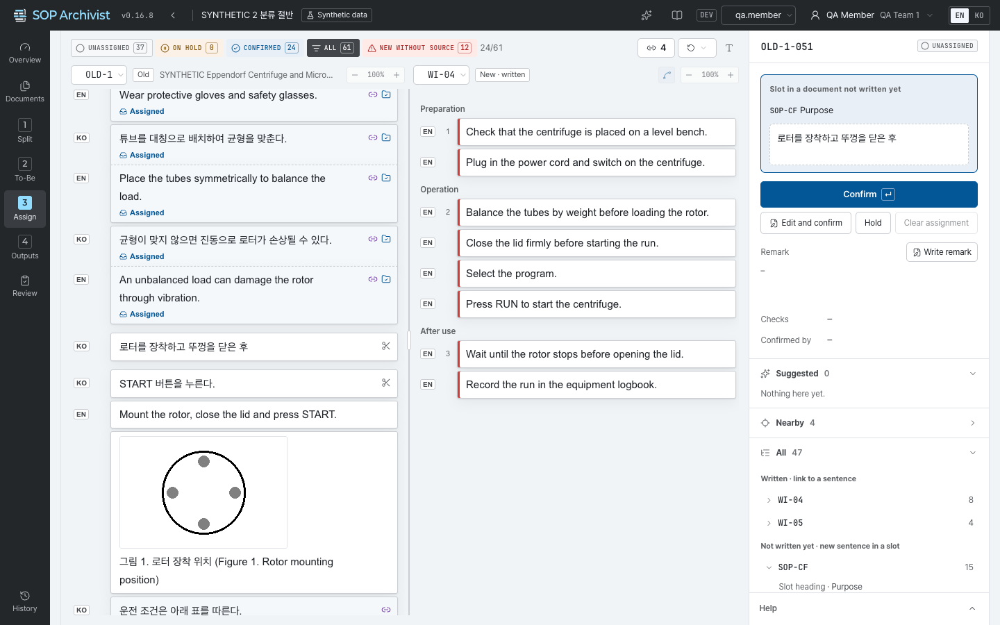
- 고른 곳 상자: 칸 이름과 새 문장 칸(한·영). 처음에는 원문 그대로다.
- 확정(↵). 확정하면 다음 미완 조각으로 간다.
- 고쳐서 확정(E): 새 문장 글을 고친 뒤 저장(Ctrl+↵).
- 보류(H): 보낼 곳 없이도 사유를 남기고 보류할 수 있다.
- ③ 전체: 문서 → 칸·단계로 한 단계씩 펼쳐 고른다(N/A 칸은 고를 수 없다). SOP의 칸마다 바로 앞에 "Slot heading" 자리가 있어 옛 제목 줄을 그 칸의 제목으로 삼는다. 위쪽 ① 추천·② 가까운 곳이 먼저다.
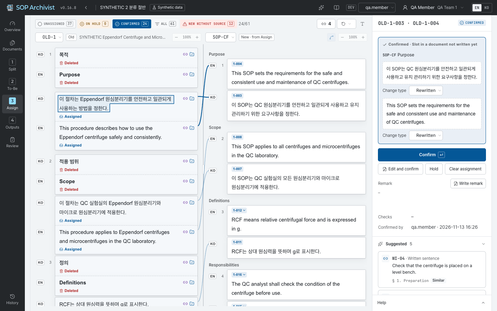
- S1 조각(한/영 짝).
- 확정한 곳: SOP-CF · Purpose.
- 새 문장(고친 글). 변경 종류는 그대로 / 말투 / 고쳐 씀 중 사람이 고른다. 글자가 원문과 같으면 코드가 "그대로"로 둔다.
- 확정한 사람·시각.
- 배정 지우기(U): 미배정으로 되돌린다. 확정·보류 조각에 AI 제안을 다시 받으려면 먼저 이걸 한다.
따라갈 문장을 배정하면
| 하는 일 | 저장 때 서버가 보는 것 | |
|---|---|---|
| S1 | SOP-CF · Purpose를 고르고 "고쳐서 확정"으로 한·영 새 문장을 고친다. 변경 종류 고쳐 씀. | 새 문장 언어 = 출처 언어, 글 비어 있지 않음. |
| S2 | Responsibilities, 문장 끝만 SOP 문체로 → 말투. | — |
| S3 | 한글 두 조각을 WI-01 3단계·4단계로 각각. 영어 한 조각은 새 문장 둘(3·4단계)로 → 나눔(코드가 계산). | 관계 묶음이 닫혀 있는가. |
| S4 | OLD-1과 OLD-2의 두 조각을 한 새 문장으로 → 합침. 한 번 확정이 같은 묶음의 다른 조각도 확정한다(고른 곳 상자 아래 "함께 확정되는 것"). | 보낸 새 문장의 모든 출처가 저장 안에 있는가. |
| S5 | ④ 삭제·외부 이동에서 삭제 + 사유. | 삭제·이동·중복 배정·표 구성 변경은 사유 필수. |
| S6 | 두 문서로 보내기 → 중복 배정 + 사유. | 서로 다른 새 문서 둘 이상이면 중복 배정(같은 문서 안 여러 문장은 나눔). |
| S7 | 다른 문서로 이동 + 대상 번호 SOP-QC-99999 + 사유. | — |
| S8 | 표 조각을 WI-01 4단계로. 칸 문장은 표를 따른다. 칸 자리가 원문과 다르면 "표 구성 변경" + 사유. | "그대로" 표는 칸마다 칸 새 문장이 있어야 한다. |
| S12 | 구조 제목·머리말을 Shift+클릭으로 여러 개 골라 같은 사유로 한 번에 삭제. | 여러 개 한 번에는 삭제·이동만, AI 제안 조각이 섞이면 통째 거절. |
- 단축키: ↑↓·J/K 다음·이전, ↵ 확정, E 고쳐서 확정(저장 Ctrl+↵), H 보류, U 배정 지우기, Shift+클릭 여러 조각.
- 문서마다 따로 확대(마우스를 올리고 Ctrl+휠, Ctrl +/−), 두 문서 사이 세로선을 끌어 폭 조절. 둘 다 사람마다 기억한다.
- 확정된 조각에서도 주 단추가 "Confirm"으로 보인다(다시 저장의 뜻).
9Assign — 이미 쓴 문서와 잇기
New 문서를 이미 써서 업로드한 경우다. 새 문서(WI-04)를 추출하면 시스템이 New 단위마다 새 문장을 하나씩 만든다(확정 글 = 새 문서 원문 그대로, 자리 = 실제 절). Old 조각을 고르면 그 New 원문이 옆에 열리고, New 문장을 눌러 Old 조각을 출처로 잇는다. 그래서 두 입구가 같은 표를 채우고 결과물 계산이 하나다.
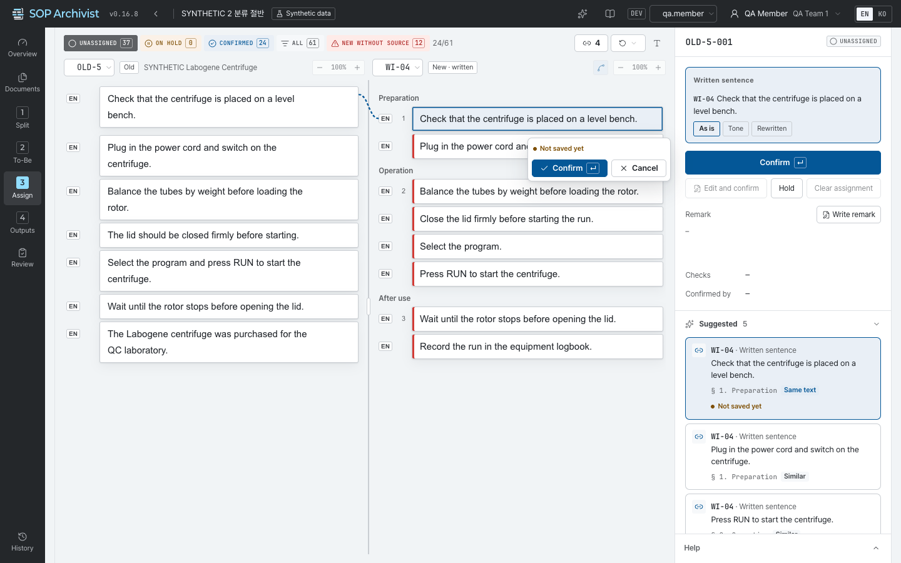
- 같은 글자 짝 한 번에 확정: Old 문장과 글자가 똑같고 후보가 하나뿐인 1:1 짝을 "그대로"로 몰아서 확정한다.
- New 원문(이미 쓴 문서). 점선 = 추천 문장,
← 5-001= 이미 붙은 Old 출처, 위험색 = 출처 없음. - 고른 New 문장. Ctrl(⌘)+클릭으로 여러 개 고르면 나눔이다. 다른 Old 조각이 이미 붙은 문장을 고르면 합침이다.
- 고른 곳 상자: 문장마다 변경 종류(AI 제안 그대로·그대로·말투·고쳐 씀). 나눔·합침은 서버가 구조로 정해 자동 표시만 한다.
- 두 문서 사이 세로선. 끌어서 폭(30~70%), 더블클릭은 반반.
- 문서별 확대. 이 문서 위에 마우스를 올리고 Ctrl+휠도 같다.
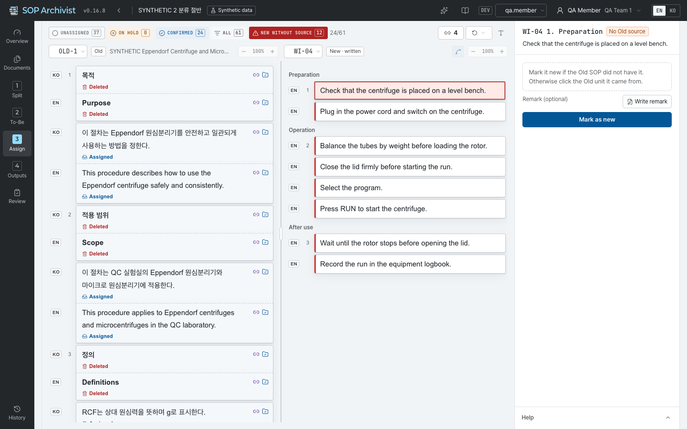
- 출처 없는 New 칩. 남아 있으면 검토 요청을 막는다(위험색 숫자).
- 지금 볼 문장. Old 조각을 누르면 그 조각이 이 문장의 출처가 된다.
- Old SOP에 없던 내용이면 "신규로 표시" S11.
- New 문장의 글·자리는 새 문서 원문으로 잠겨 있다. 고칠 수 있는 것은 출처와 변경 종류뿐이다.
- 짝 맞추기는 같은 언어끼리다. Old 조각에 없는 언어의 문장은 고를 수 없다. 한/영 짝 조각은 New 문장의 짝을 다른 언어 조각에 자동으로 붙이고, New 쪽이 한 언어뿐이면 그 언어만 잇고, 확정 뒤 짝을 풀어 판단이 없던 다른 언어 조각을 미배정인 제 줄로 남긴다(사람이 삭제나 보류로 끝낸다. 기록
pair.delete). - 보낼 곳은 바꾸기가 기본이다. 다른 곳을 고르면 이전 연결을 뗀다(출처만 붙어 있던 New 문장은 출처 없음으로 돌아간다).
- 짝이 없는 Old 조각은 삭제 후보다(
OLD-5-007구매 이력 → 삭제 + 사유).
10AI가 하는 일
AI는 작성자가 요청할 때만 돌고, 결과는 제안으로만 남는다. 아래 화면의 제안은 실제 모델이 아니라 가짜 AI가 합성 정답으로 답한 것이다.
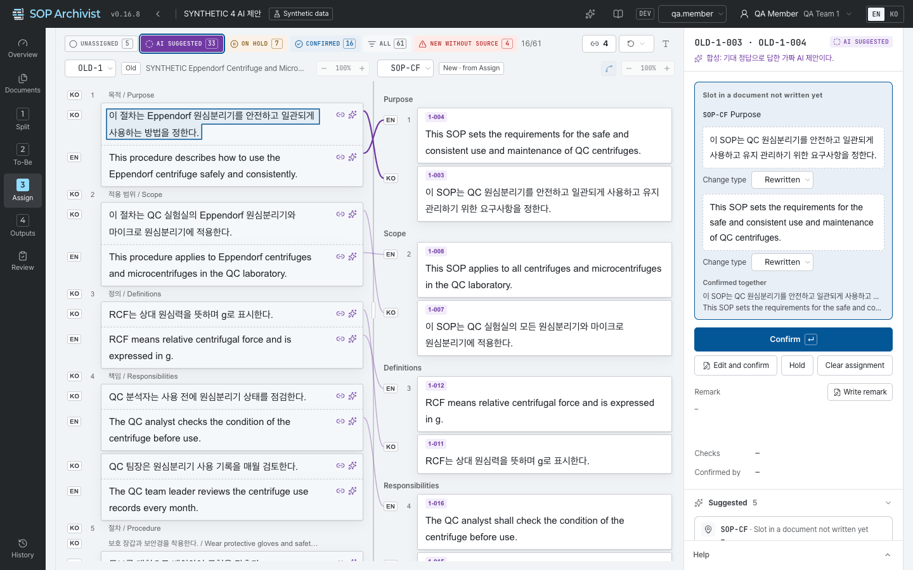
- AI 제안 거르기. AI 제안이 있으면 이것부터 연다.
- 제안 이유.
- ① 추천 맨 위 카드가 AI 제안이다. 같은 글자·비슷한 문장 후보가 그 아래에 온다.
- 고른 곳 상자: 제안된 칸과 고쳐 쓴 한·영 문장(SOP로 가면 SOP 문체, WI로 가면 WI 문체).
- ↵ 그대로 받기 — 제안 문장이 확정 문장이 된다. 채택 여부는 코드가 판정한다(그대로 / 고쳐서 / 버림).
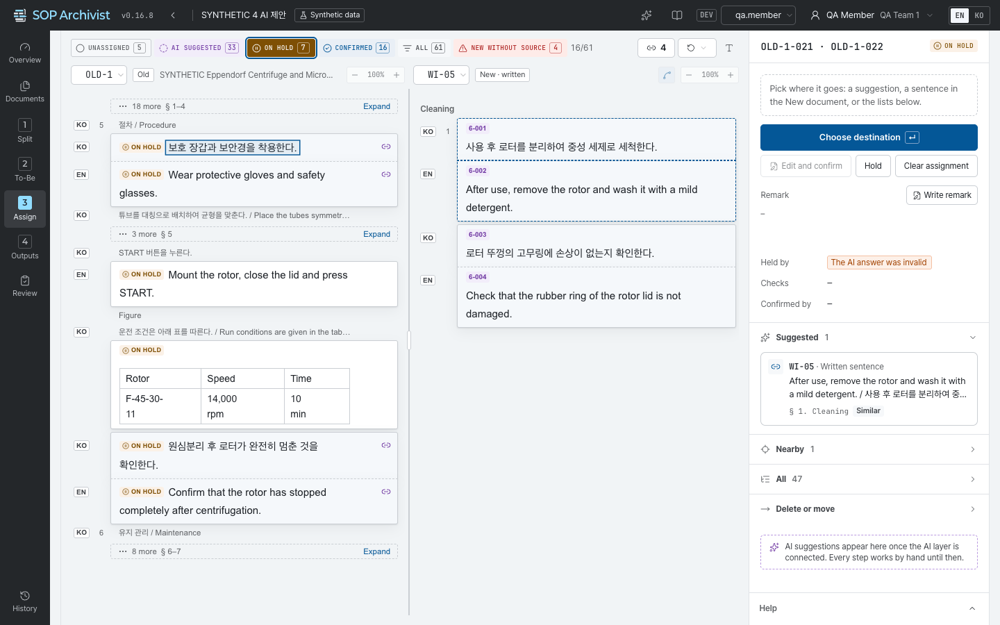
- 보류 거르기. 보류 조각만 제 모양이고 글 첫머리에 ON HOLD 칩이 붙는다. 바로 앞뒤 조각은 흐린 한 줄, 먼 구간은 "N more" 한 줄로 접히며 누르면 펼쳐진다.
- 시스템 보류 라벨. AI 응답이 형식이 틀렸거나 후보 밖을 골랐으면 그 단위만 "AI 응답 무효"로 보류하고 나머지는 진행한다. 사람이 쓴 사유가 아니라 라벨로 보인다.
| AI 작업 종류 | 어디서 | 하는 일 | 쓰는 것 |
|---|---|---|---|
분류 classify | Assign | 임베딩으로 칸 후보 3개를 추리고("삭제"는 늘 후보), LLM이 하나를 골라 이유·규칙 ID·근거 인용·변경 종류·한영 고쳐 쓰기를 낸다. "다른 문서로 이동"은 제안하지 않는다(묶음 밖을 모르므로). | 임베딩 + LLM |
번역 translate | Assign | 방향을 골라(한→영, 영→한) 짝 없는 문장의 반대 언어를 제안. 출처 새 문장이 바뀌면 AI 번역은 지우고 확정 번역은 보류로 돌린다. | LLM |
입구 2 match_plan → match | Assign | 코드가 옛 단위와 새 문장을 묶고(임베딩, 없으면 글자 유사도), LLM에는 변경 종류만 묻는다. | 임베딩 + LLM |
한/영 짝 pair | 쪼개기 | 한/영 따로 문서의 한글·영어 문장 짝 제안. | 임베딩만 |
나누기 split | 쪼개기·Assign | 복합 문장을 나눌 자리 제안. 받아들이면 나누기 편집이 된다. | LLM |
- 확정하지 않는다. 확정·보류된 단위를 덮지 않는다. 같은 종류의 이전 제안 위에만 쓴다(짝 제안이 분류 제안을 덮지 않는다).
- 원문을 고치지 않는다. AI 제안 문장은 확정 문장과 따로 보관한다.
- 직원 실명을 보내지 않는다(역할·부서 같은 비식별 정보만). 모델은 사내 GLM이다.
- 늦게 온 응답은 적용하지 않는다: 요청 때 적어 둔 대상의
revision·해시가 그 사이 바뀌었으면stale로 끝난다. 검토 요청을 하면 대기 중 작업은 취소된다.
- 임계값(짝 유사도 등)은 합성 자료로만 잡은 값이다. 실제 모델·SOP로는 아직 시험하지 않았다 — 정확도·채택률은 근거가 없다.
- 표 단위 AI 제안은 보낼 곳만 고르고 칸 글은 그대로 둔다(칸 고쳐 쓰기는 사람 또는 칸 번역).
- "AI 제안 여러 개 한 번에 확정"을 일부러 막았다(목표: 사람이 줄마다 본다). 실제 분량에서 이 비용이 견딜 만한지가 큰 질문이다.
11결과물 A·B·C
세 결과물은 모두 확정 결과로 코드가 계산한다(AI 없음). 결과물은 한 벌이다 — 한글·영어 문장을 한곳에 함께 보이고, 같은 데이터(옛 줄·보낸 곳·새 문장)를 서로 다른 방향에서 본다. 작업 중에도 볼 수 있고, Excel은 미리보기 창에서 파일과 같은 모양을 본 뒤 받는다.
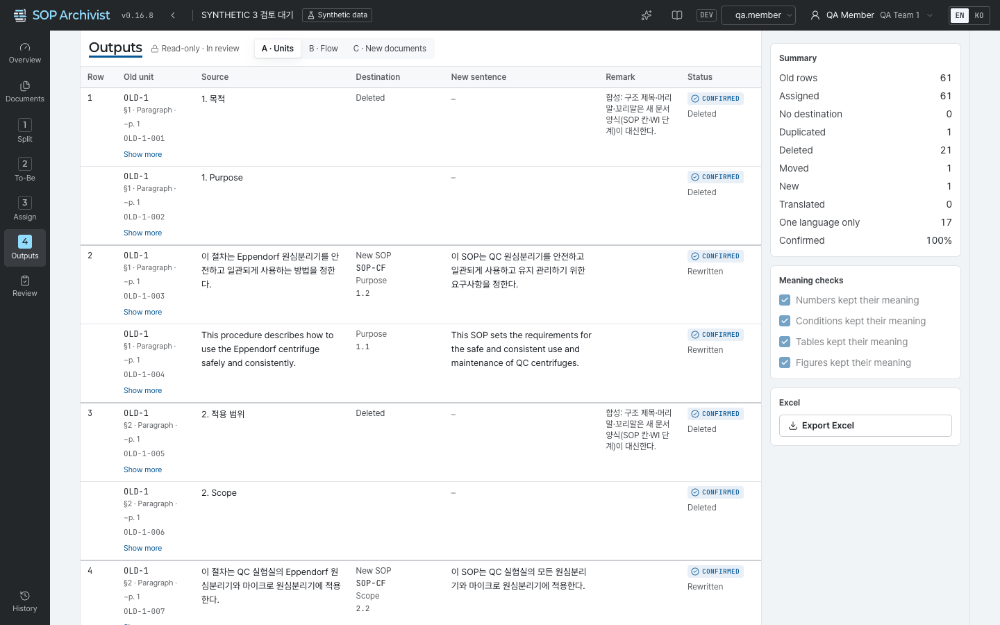
- A 탭.
- Row · Old unit(문서·위치·ID) · 원문 · 보낸 곳 · 새 문장 · Remark · 상태와 변경 종류. 나눔은 ①②, 중복 배정은 보낸 곳마다 줄을 나눈다.
- Row: 의미 묶음 번호. 묶음 첫 줄에만 보인다.
- 요약 숫자(한 벌): 옛 줄 61 · 배정 61 · 갈 곳 없음 0 · 중복 1 · 삭제 21 · 이동 1 · 신규 1 · 한 언어만 17 · 확정률 100%.
- 의미 검토 4항목(숫자·조건·표·그림). 작성자가 직접 표시해야 검토 요청이 된다 — 기계적 커버리지와 사람의 의미 검토를 따로 보이려는 것.
- Excel: 누르면 미리보기 창(파일과 같은 시트 넷)이 먼저 열리고 거기서 받는다. 묶음마다 파일 하나.
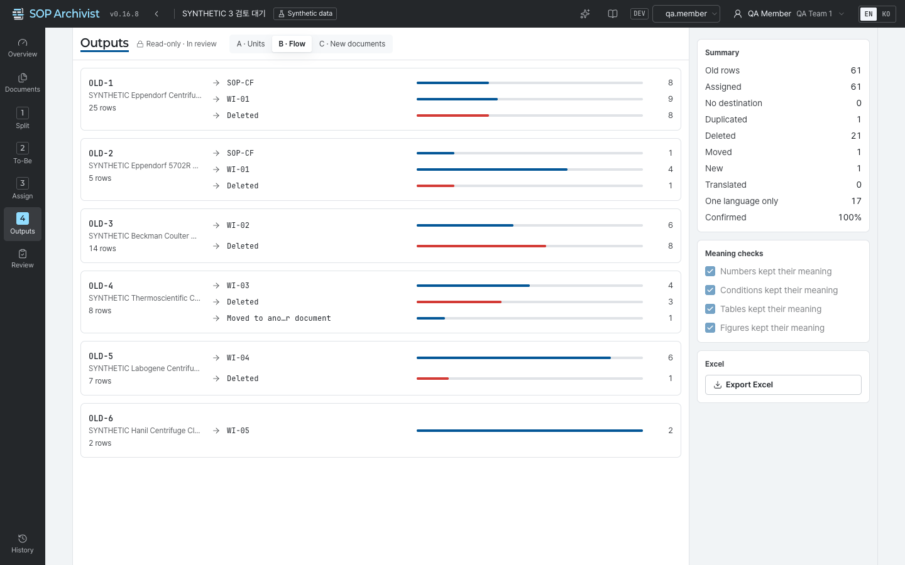
- OLD-1(25줄) → SOP-CF 8 · WI-01 9 · 삭제 8 …
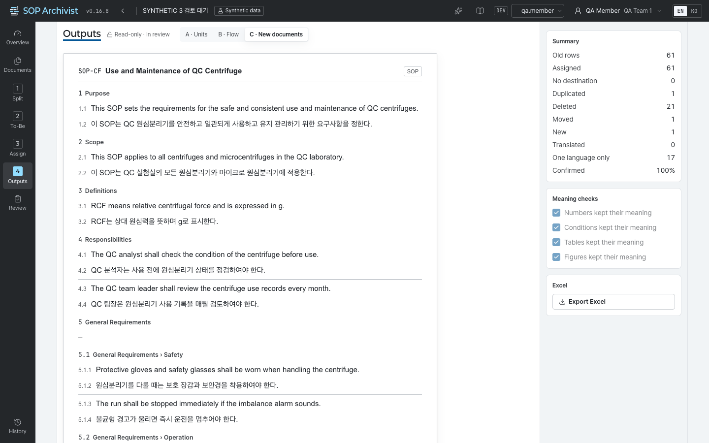
- SOP-CF: S1 Purpose, S2 Responsibilities, S6 Safety(둘째 줄). 빈 칸은 "–", N/A 칸은 사유와 함께.
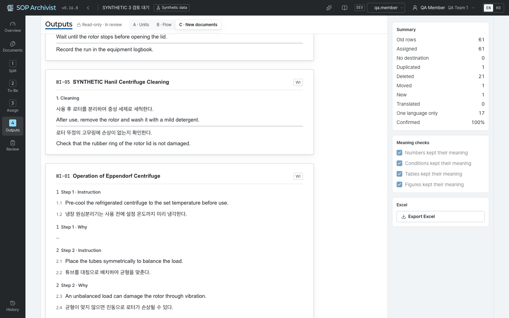
- WI-01: 2단계 Why(R10), 3단계에 S3 앞쪽과 S9 그림([Figure]). C에서 새 문장 순서와 WI 단계를 바꿀 수 있다(작업 중일 때).
= + - @로 시작하는 글도 문자열로 쓴다. 흐름도 그림은 서버가 저장소에 넣은 한글 글꼴로 그린다.- A의 보낸 곳·변경 종류 칸이 내부 코드값(
delete,as_is,tone,rewritten)으로 보인다. 사람 말 라벨이 아니다. - B의 "삭제", "다른 문서로 이동"만 한글이라 영어 화면과 섞인다.
- 명세는 C에 출처를
← OLD-1 §5.1, OLD-2 §1 (합침)꼴로 보이게 했는데, 지금 화면 C에는 문장별 출처가 없다(삭제·이동 칸에만 원문이 보인다).
12검토
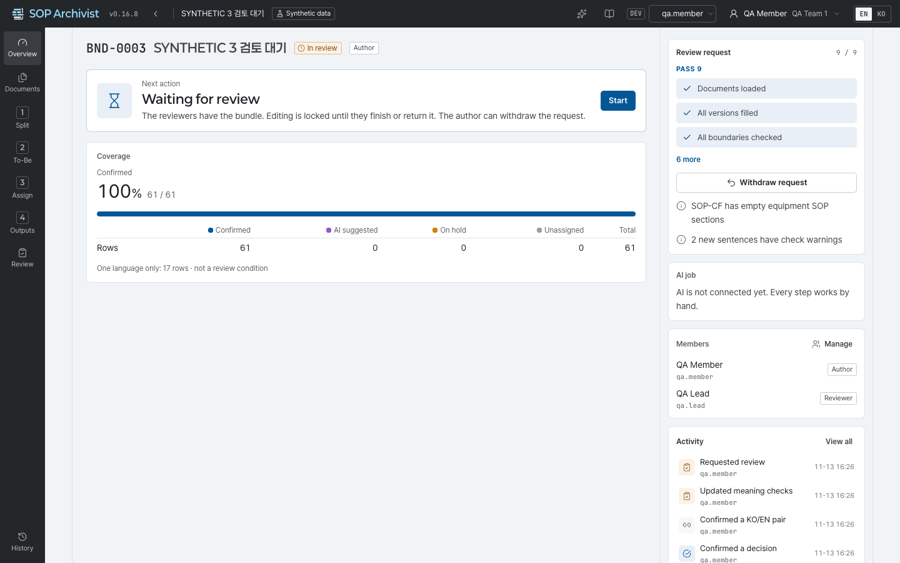
- 상태 In review. 검토 대기·완료에서는 내용을 고칠 수 없다(읽기와 내보내기만).
- 검토 요청 조건. 아래 표가 전부다. 검토 대기 중에는 작성자에게 Withdraw request가 보인다 — 사유 없이 작업 중으로 되돌린다.
| 조건 | 채우는 곳 |
|---|---|
| 옛 문서가 있고 거절·실패 문서가 없음 | 문서 |
| 미배정·AI 제안·보류인 커버 단위가 없음(두 언어 모두) | 분류 |
| 미배정·AI 제안·보류인 새 문장이 없음 | 짝 맞추기(입구 2), 번역 |
| 삭제·이동·중복 배정·표 구성 변경에 사유 | 분류 사유 칸 |
| "추출 누락 의심" 경고를 모두 확인함 | 쪼개기 |
| 모든 Unit의 경계를 확인함(옛·새 문서, 글이 있는 Unit) | 쪼개기 |
| 의미 검토 4항목 표시 | 결과물 |
| 검토자 1명 이상 | 개요 › 멤버 |
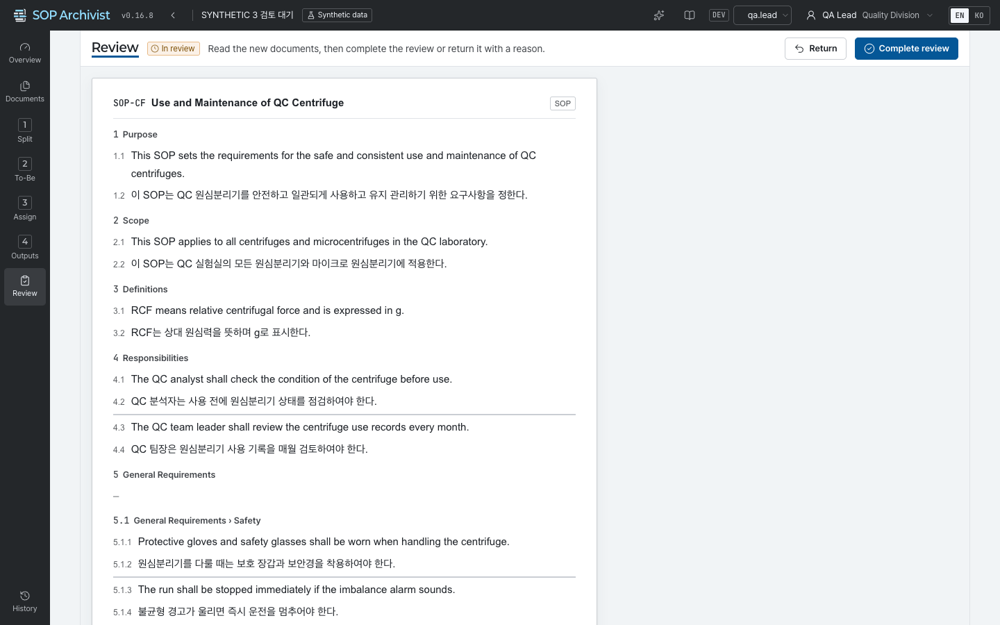
- 상태.
- 검토 완료 → Review complete.
- 되돌리기(사유 필수) → 작업 중.
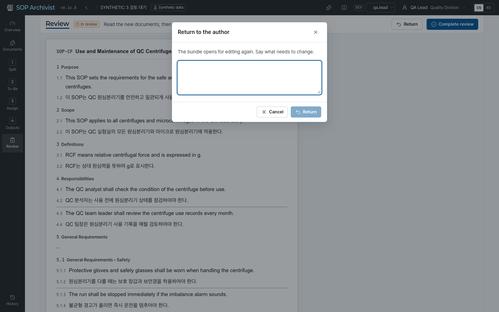
- 사유(작업 기록에 남는다).
- 되돌리면 의미 검토 4항목이 모두 지워져 작성자가 다시 표시해야 한다.
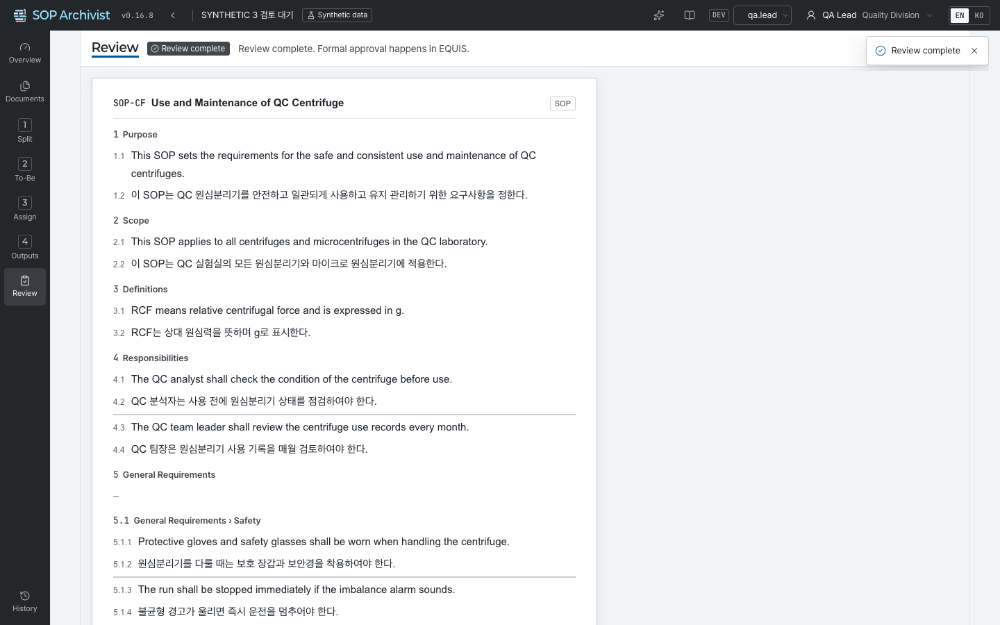
- Review complete — 꽉 찬 회색.
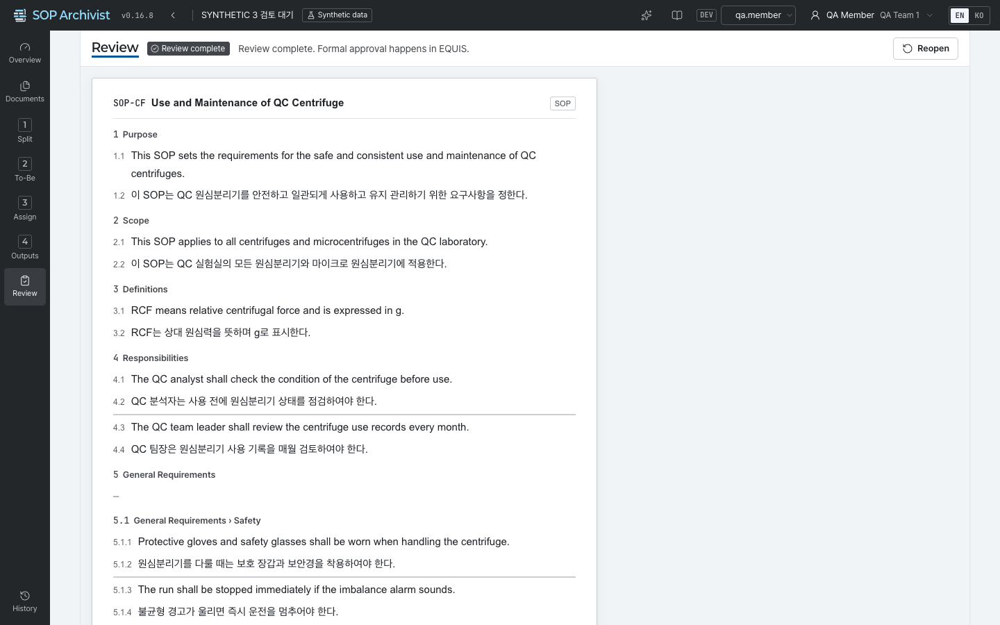
- 상태.
- 다시 열기(사유) → 작업 중. 정식 승인은 EQUIS에서 하므로 이 앱의 완료는 작업 단계 표시다.
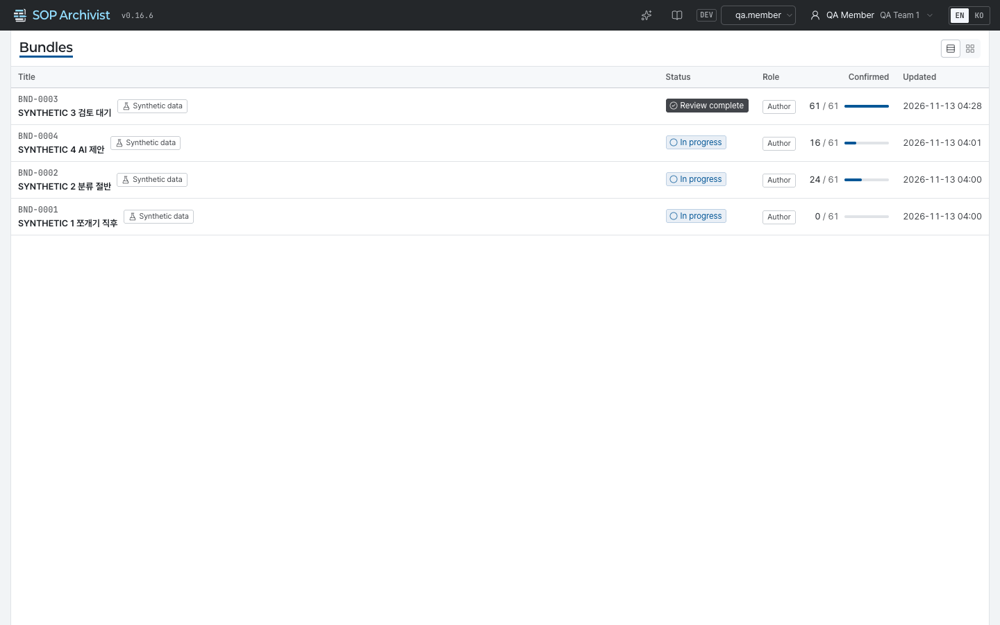
- 완료(꽉 찬 회색).
- 진행 중(연한 파랑).
13라이프사이클
시스템 안의 것들이 어떤 상태를 거치는지 한 곳에 모았다. 상태 칩 색은 진하기 3단(테두리 → 연한 바탕 → 꽉 참)으로 무게를 나타낸다.
묶음
문서
단위와 새 문장의 상태
칸 문장은 자기 표·행의 상태를 따르고, 한/영 짝 줄은 덜 끝난 쪽 상태를 보인다. AI 결과는 미배정 단위, 또는 같은 종류 AI 작업의 이전 제안 위에만 들어간다.
한 문장의 일생 S3
AI 작업
지침·프롬프트 버전
키별(rules, prompt.classify, prompt.translate, prompt.match, prompt.split)로 버전이 쌓이고 키마다 활성 버전 하나를 AI 작업이 쓴다. 버전은 지우지 않는다. 새 버전은 만든 뒤 따로 활성화해야 쓰인다. 모든 제안은 쓴 버전을 기록하므로, 버전을 바꿔도 이전 제안 기록은 그대로다. 처음 기동 때 저장소의 시드 파일(도메인 문서)에서 첫 버전을 만든다.
14관리자 화면과 권한
권한은 표 기반이다. 권한 키는 코드가 정의하고, 사람·부서에 역할 또는 권한을 더하기만 한다. 부서에 준 권한은 하위 부서까지 내려간다. 시스템 관리자(APP_SYSADMINS)는 모든 권한을 가진다. 묶음 멤버십(4장)과는 별개다.
| 권한 키 | 할 수 있는 것 | 관리 화면 메뉴 |
|---|---|---|
permission.manage | 역할·부여 관리, 변경 기록, 유효 권한 조회 | Access |
directory.sync | HR 직원 디렉터리 동기화 실행·미리보기 | Directory sync |
system.view | 배치 작업(백업·동기화) 결과 보기 | Batch jobs |
ai.admin | 사내 AI 연결 시험, 사용량 | AI |
bundle.create | 묶음 만들기(운영에서는 TF 부서에 역할로) | — (홈의 New bundle) |
bundle.admin | 모든 묶음의 메타(제목·상태·멤버·진행 숫자)와 멤버 변경. 내용은 멤버가 되어야 본다 | Bundles |
guideline.manage | AI 지침·프롬프트 버전 올리기·활성화 | AI guidelines |
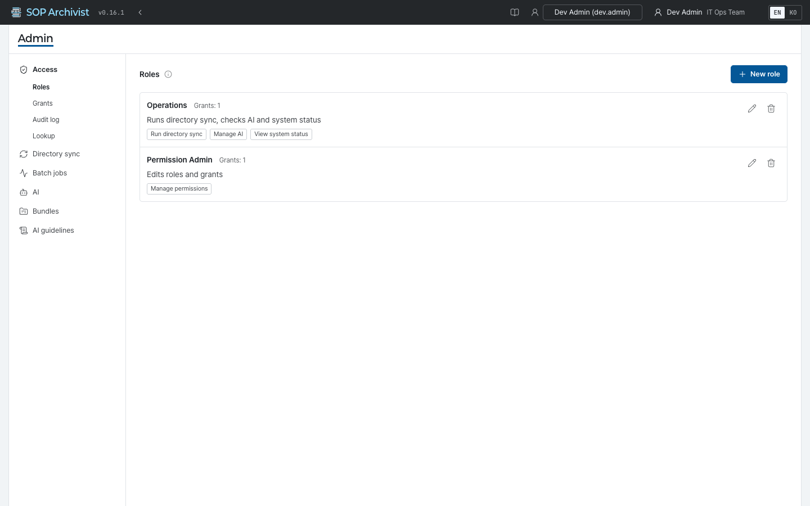
- Access(권한) 묶음. 아래 넷이 하위 항목이다.
- Roles: 권한 묶음에 이름을 붙인 것.
- 새 역할.
- 역할 목록과 들어 있는 권한·부여 수.
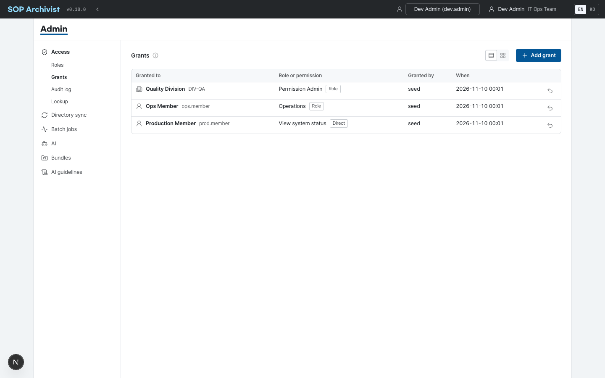
- Grants.
- 부여 더하기: 사람 또는 부서에 역할 또는 권한 하나.
- 부여 목록. 개편으로 사라진 부서·사람의 부여도 지우지 않고 "찾을 수 없음"으로 보인다. 표·카드 전환이 된다.
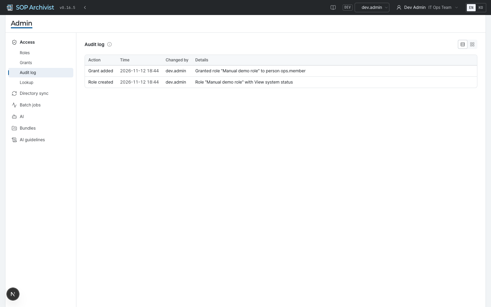
- Audit log.
- 시각·누가·무엇을·요약.
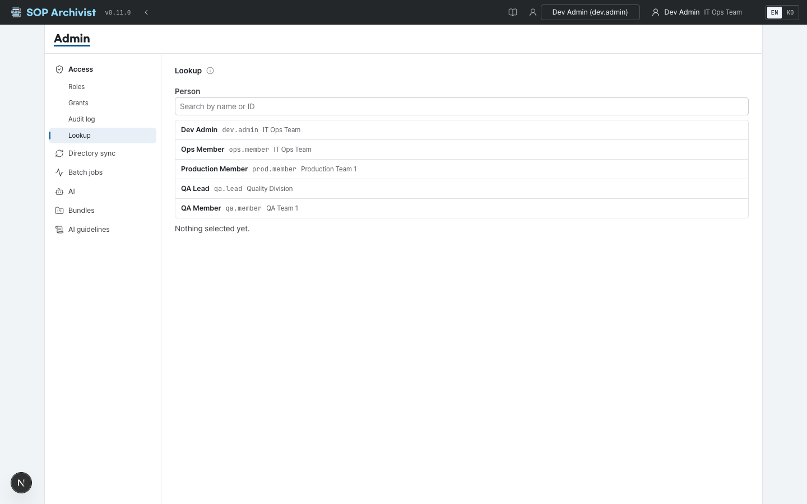
/api/me와 같은 함수 하나에서 나온다.
- Lookup.
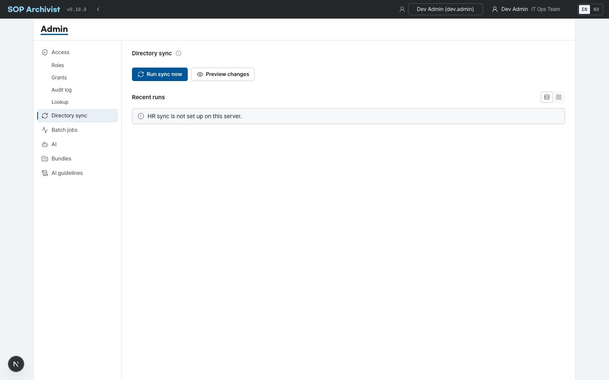
- Directory sync.
- 지금 동기화: HR 웹훅에서 직원·부서를 받아 반영. 가드 셋(건수 정합·빈 피드·삭제 상한)에 걸리면 아무것도 바꾸지 않는다.
- 미리보기: 바꿀 내용만 보여 주고 바꾸지 않는다. 주기 실행은 서버 설정으로 돈다.
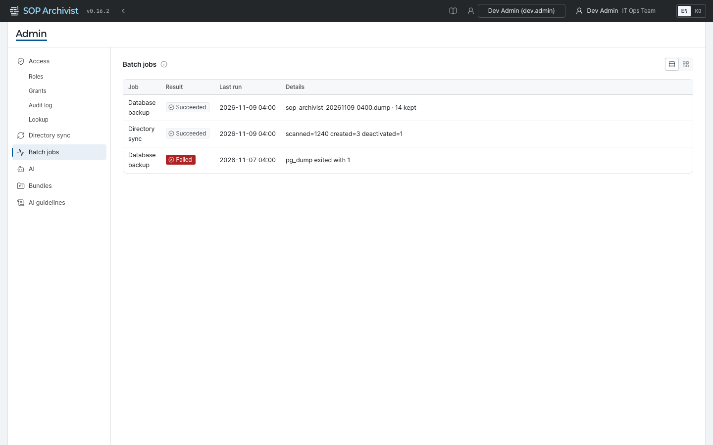
- Batch jobs.
- 결과 칩: 성공은 연한 회색, 실패는 꽉 찬 빨강.
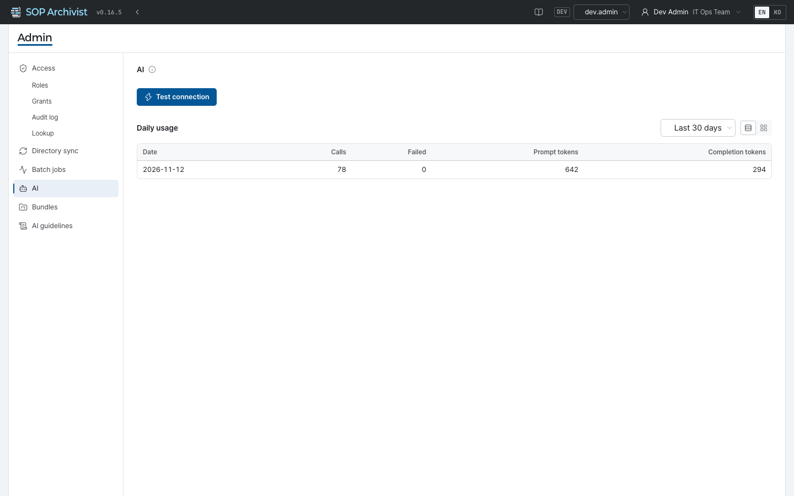
- AI.
- 연결 시험: 모델과 응답 시간.
- 일별 호출·실패·토큰. 호출 한 번마다 한 행이고 원문은 싣지 않는다.
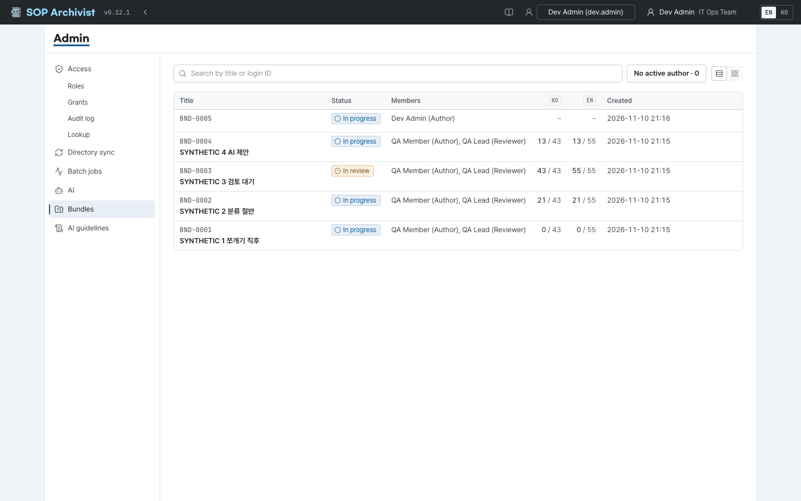
- Bundles.
- 활성 작성자가 없는 묶음만 거르기(작성자가 모두 퇴직한 묶음 정리용).
- 모든 묶음의 제목·상태·멤버·진행. 줄에서 멤버를 고칠 수 있고, 자기를 넣으면 기록에 남는다.
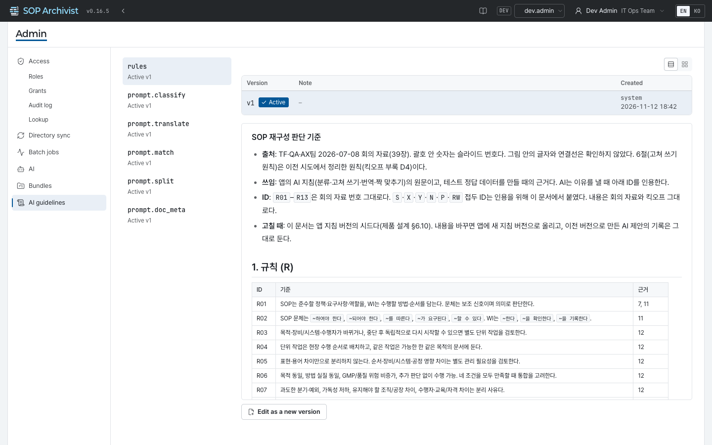
- 지침 키(rules, prompt.*)와 활성 버전.
- 버전 이력. 줄을 누르면 그 버전을 본다. 활성이 아닌 버전에 "활성화".
- 내용. 마크다운으로 그려 보이고, 고칠 때는 원문 + 미리 보기로 새 버전을 만든다.
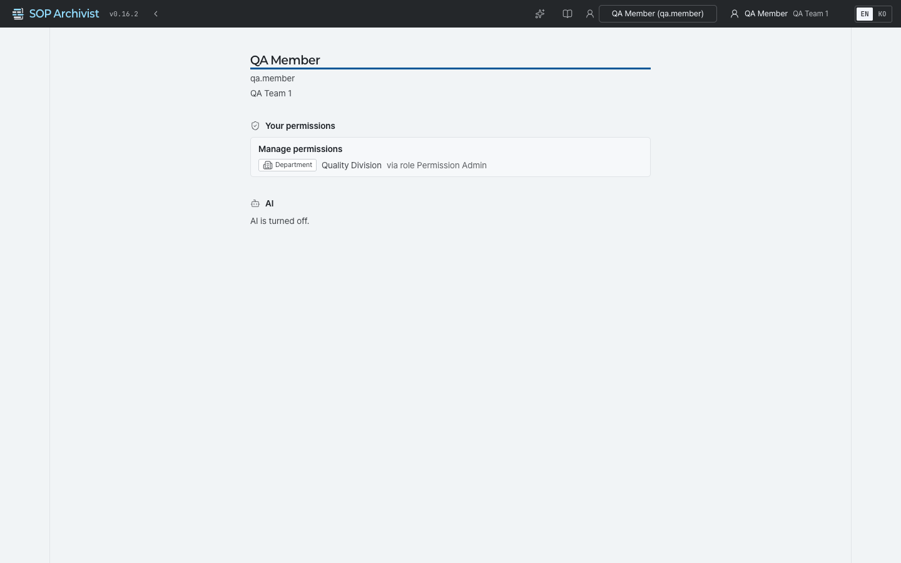
- 로그인 ID·이름·부서(HR 디렉터리에서).
- 내 유효 권한과 각 권한이 어디서 왔는지(개인 부여 / 부서 부여 / 시스템 관리자).
azp)까지 검사해 다른 앱의 토큰을 거부한다. 로컬 개발은 dev 모드로 사용자를 골라 쓴다(이 문서의 그림). 퇴직자는 무권한이다.15피드백해 볼 곳
설계 때 정한 것 중 다시 볼 만한 결정
| 결정 | 이유(당시) | 물어볼 것 |
|---|---|---|
| AI 제안은 여러 개 한 번에 확정하지 않는다 | 사람이 줄마다 본다(목표 3) | 실제 SOP 수백 줄에서 감당할 만한가 |
| 변경 추적이 남은 DOCX는 거절 | 어느 쪽을 기준으로 할지 정하기 전에는 진행하지 않는다 | 실제 파일에 변경 추적이 흔한가 |
| 다시 추출해도 이전 판단을 옮기지 않는다 | 범위 밖(복잡도) | 추출기를 고치면 작업을 다시 해야 하는데 괜찮은가 |
| 레이아웃 표는 사람이 표마다 바꾼다 | 본문이 표 안에 든 경우가 드물다 | 실제로 드문가 |
| 제목도 커버 단위 — 구조 제목은 여러 개 골라 한 번에 삭제 | 아무 글자도 조용히 빠지지 않게 | 제목 삭제 작업이 귀찮지 않은가(자동 처리 여지) |
| "다른 문서로 이동"은 번호만 기록 | 다른 묶음과 엮지 않는다 | 이동한 문장을 받는 쪽에서 찾을 방법이 필요한가 |
| 그림은 내용을 읽지 않고 "그대로"로 고정 | 그림 변경 추적은 범위 밖 | 그림이 바뀌는 경우는 어떻게 남기나 |
| 한 사람은 한 묶음에서 한 역할 | 작성자의 자기 검토 방지 | 작은 팀에서 검토자를 늘 따로 둘 수 있나 |
| 이 앱의 "완료"는 작업 표시, 정식 승인은 EQUIS | 전자서명·재인증 없음 | QA가 이 의미를 같은 뜻으로 받아들이나 |
써 보며 보인 것 (화면)
- 결과물 A의 보낸 곳·변경 종류 칸이 내부 코드값으로 보인다(
delete,as_is,tone). - 결과물 B의 "삭제/다른 문서로 이동"만 한글이다.
- 결과물 C에 문장별 출처 표시가 없다(명세는
← OLD-1 §5.1 (합침)꼴). - Assign에서 이미 확정한 조각의 주 단추도 "Confirm"이다.
현재 한계
- 입구 2의 표·그림: Assign은 New 문서의 문장만 잇는다. 새 문서에 표·그림이 있으면 AI가 잇거나 신규로 표시해야 검토로 간다.
- AI는 가짜 AI로만 검증: 실제 사내 모델·실제 SOP로 정확도·채택률을 잰 적이 없다. 유사도 임계값도 합성 자료로 잡은 값이다.
- 옛 표 → 새 문단 잇기는 아직 없다.
- 운영 서버에는 v0.10.1이 올라가 있다(2026-11-10, GitLab 파이프라인. 첫 배포는 2026-11-09 v0.8.0 — Keycloak 로그인·HR 동기화 24시간 주기). v0.11.0·v0.11.1은 아직 올리지 않았다. 실제 SOP로 처음부터 끝까지 돌려 본 적은 아직 없다.